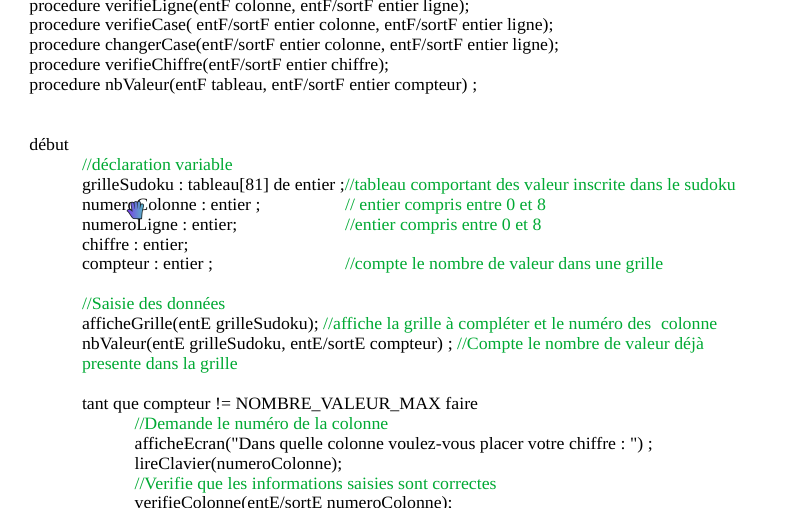

Langage C pour l'implémentation de l'algorithme et la gestion des grilles de Sudoku.
Le projet Sudoku est une implémentation en langage C d'un jeu de Sudoku permettant à un utilisateur lambda de jouer au Sudoku en fournissant une grille de n'importe quelle taille. Ce programme flexible permet de résoudre des grilles de dimensions variées telles que 3x3, 4x4, 5x5, et bien plus encore.

Langage C pour l'implémentation de l'algorithme et la gestion des grilles de Sudoku.
Le développement du projet Sudoku s'est déroulé en plusieurs étapes :
La maquette m'a permis de visualiser l'interface de sudoku que je désirais. Cependant, la réalisation de cette grille dans un terminal s'est avérée impossible. J'ai donc opté pour une autre disposition de grille en caractères ASCII.
Le pseudocode permet de définir de manière claire et concise les différentes étapes et fonctions nécessaires à l'algorithme avant de passer à l'implémentation en code.
Ce projet met en avant la flexibilité et l'adaptabilité du jeu de Sudoku, permettant aux utilisateurs de résoudre des grilles personnalisées. Grâce à ce programme, chaque joueur peut relever des défis adaptés à ses compétences tout en bénéficiant d'une interface intuitive et efficace.